You can also download a PDF copy of this lecture.
The power of a significance test is the probability that it will reject the null hypothesis when it is false. Power is therefore the probability of not making a type II error when the null hypothesis is false (recall that a type II error is failing to reject a false null hypothesis).
Example: Suppose we have the hypotheses \(H_0\!: \mu = 0\) versus \(H_a\!: \mu > 0\) and so will use the test statistic \[ t = \frac{\bar{x}-\mu}{s/\sqrt{n}}. \] with a sample of \(n\) = 10 observations.
Suppose that \(H_0\) is false. What can we do to increase the probability of rejecting \(H_0\)? That is, how do we increase power?
In the following figures, the solid line shows the sampling distribution of the test statistic when the null hypothesis is false, and the dotted line shows the sampling distribution of the test statistic under the assumption that the null hypothesis is true. The light grey area is power, and the dark grey area is the probability of making a type II error.
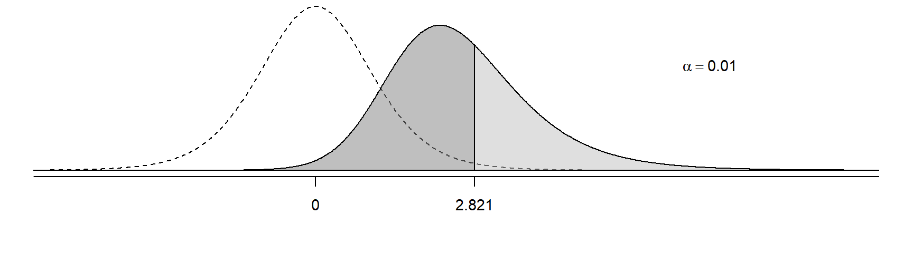 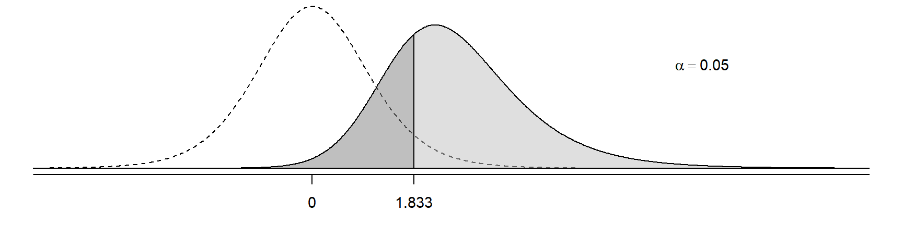 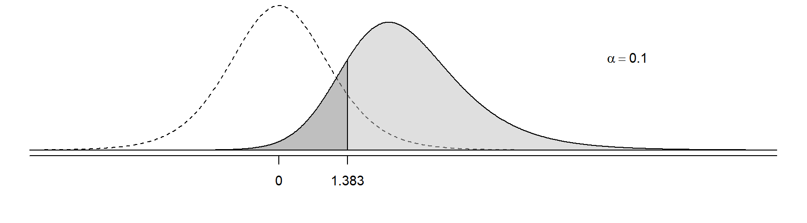
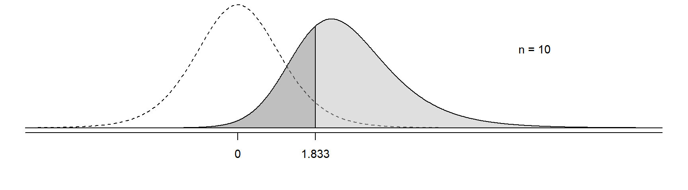 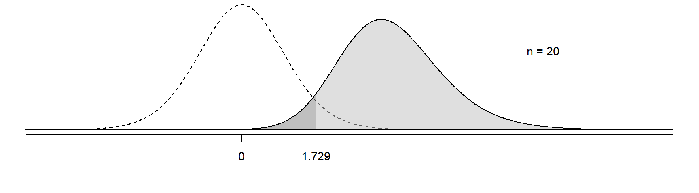 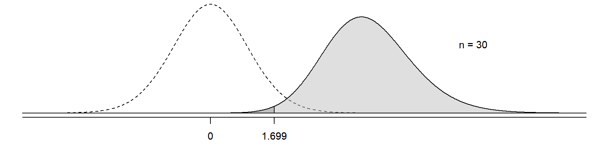
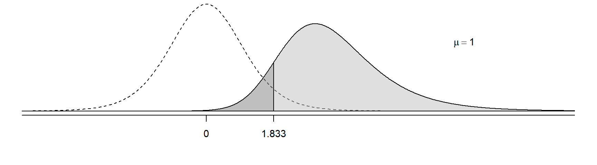 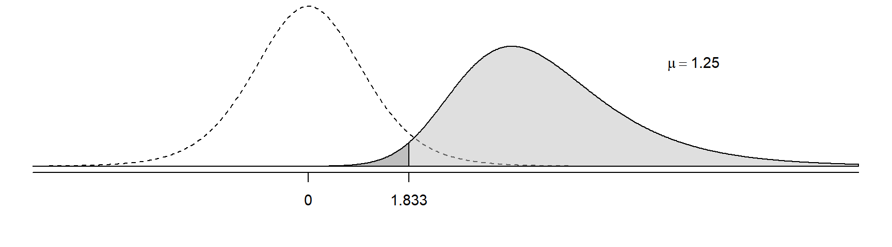
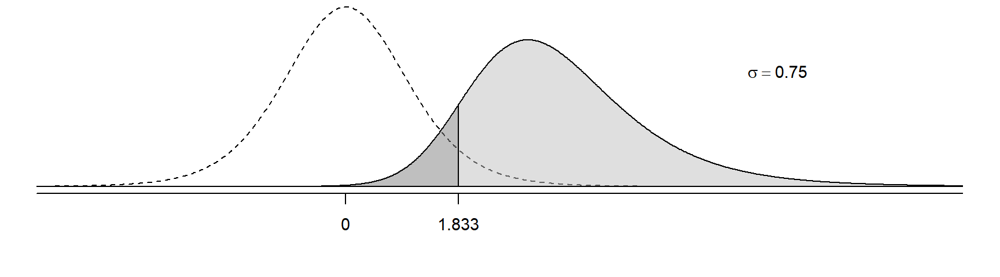 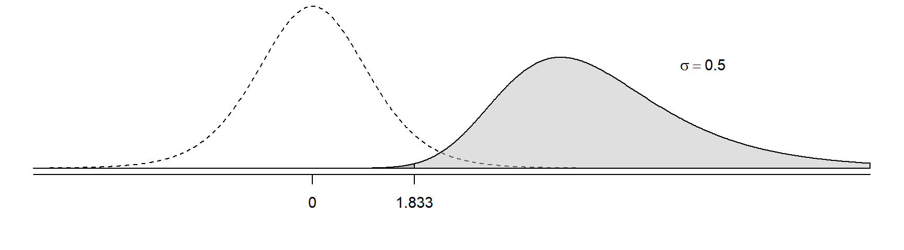
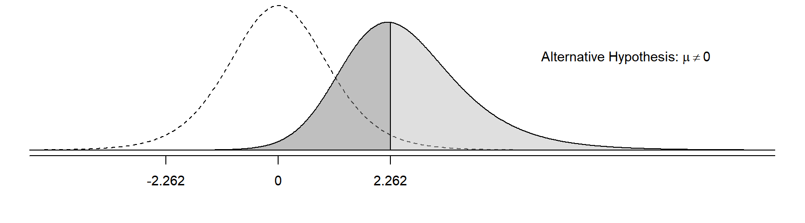 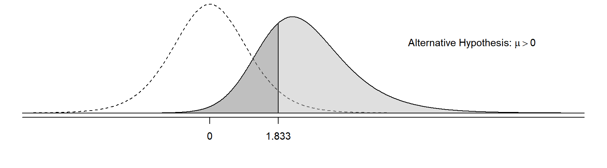